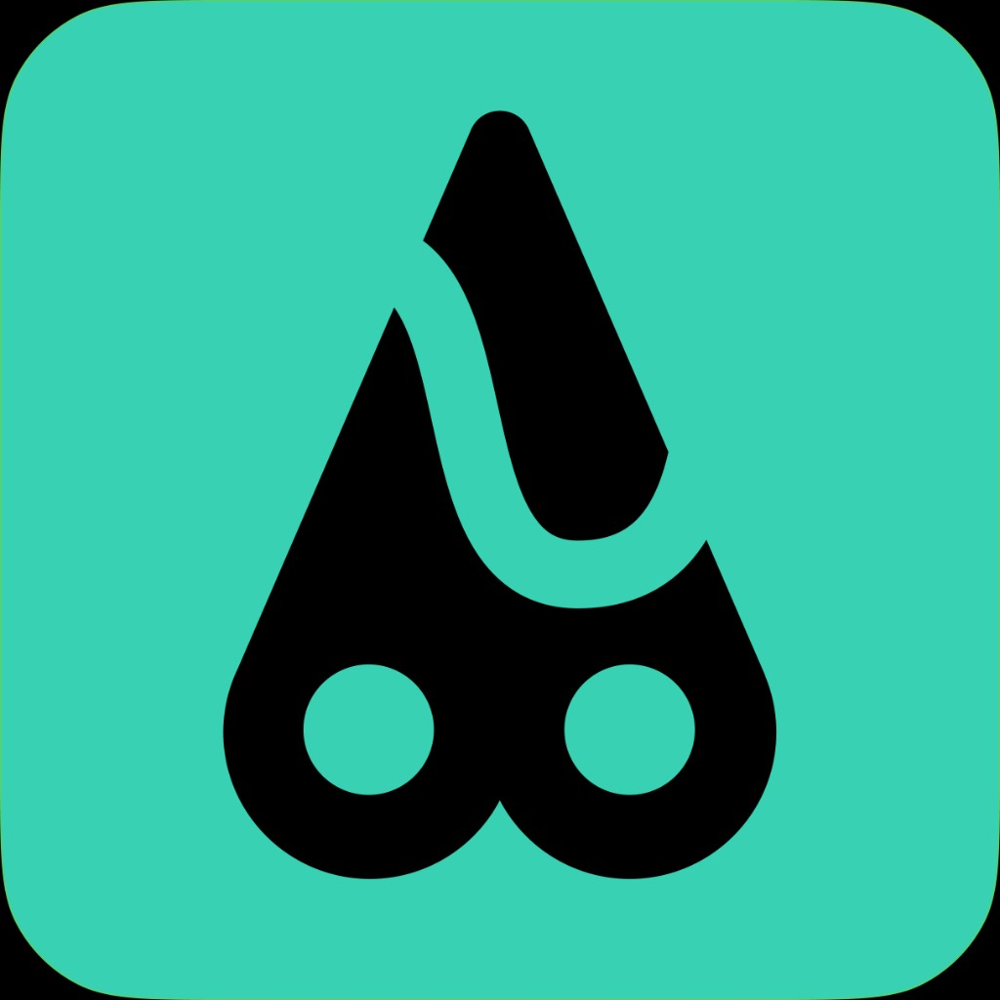

Trace Planner
轨迹拼接与分析
使用手册
深色
中文
English
轨迹拼接工具
轨迹分析工具
工程 / 项目
（无需登录）
下载 JSON 可换电脑打开；「本浏览器」仅本机暂存，清缓存会丢。
下载工程 JSON
打开工程 JSON
保存到本浏览器
从本浏览器读取
或将
.project.json
拖到此处打开
轨迹与工程数据只在你的浏览器里处理，本站不接收、不存储你的文件。
当前分析轨迹
轨迹来源
轨迹点数
总距离
总爬升
总下降
导入多条轨迹
导入后每条轨迹可单独选中进行“截取片段”。
片段截取（来自选中轨迹）
起点索引:
终点索引:
地图选起终点
加入拼接篮子
该段距离
该段爬升
该段下降
截取方向
实时高度图
拖动起点/终点时，图中对应标记会同步移动。
拼接篮子（按顺序）
把不同轨迹的片段按顺序加入，然后一键生成新轨迹。
生成拼接轨迹
清空拼接篮子
分析目标轨迹（当前）
未选择
分析结果（距离/爬升/下降/剖面）都基于这条轨迹。
切换分析目标
爬升计算选项
算法模式
原始累计（不过滤）
平滑累计（无阈值）
平滑 + 阈值累计
平滑窗口（点）
阈值（米）
切换后会实时重算当前轨迹、分段统计和剖面相关数据。
断点分段分析
断点索引
当前断点
-
添加断点
清空断点
快速均分段数
按段数自动断点
断点用于把整条路线切成多段，自动统计每段里程/爬升/下降。
段
索引范围
距离
爬升
下降
路线标注
标注类型
起点（绿）
终点（红）
营地（蓝）
补给点（橙）
风险点（紫）
普通标注（黑）
添加标注
清空标注
导出与工程
导出KML
导出GPX
导出GeoJSON
导出爬升下降图PNG
工程请在上方「工程 / 项目」中下载或打开。